CULTURA
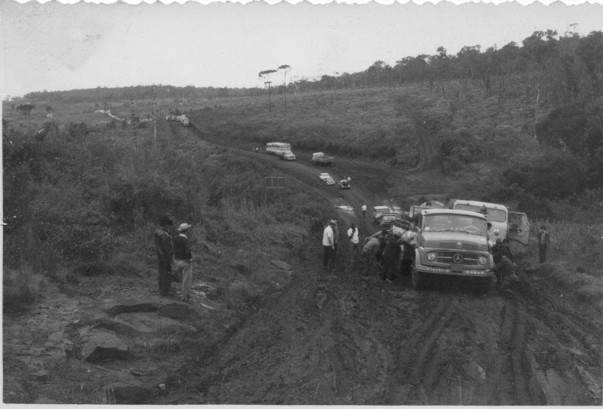
Antes da formação de Toledo, o território e a região Oeste do Paraná já eram ocupados por povos indígenas, especialmente os Guarani, que possuíam suas próprias formas de organização e relação com a terra. Posteriormente, a região passou a ser explorada economicamente, principalmente pela extração de madeira e erva-mate. Portanto, a história local antecede a chegada dos colonizadores gaúchos, em 1946, e envolve diferentes povos e processos de ocupação.
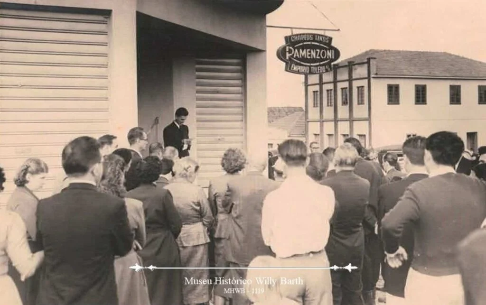
A partir de 1946, a Industrial Madeireira e Colonizadora Rio Paraná (MARIPÁ) organizou o processo de colonização da região, comercializando terras e incentivando a chegada de famílias, principalmente do Rio Grande do Sul e Santa Catarina. Esse processo também contou com trabalhadores de diferentes origens, incluindo paraguaios. A exploração dos recursos naturais e a expansão das atividades agrícolas transformaram o território. Em 1951, Toledo conquistou sua emancipação política, sendo oficialmente instalado como município em 1952.
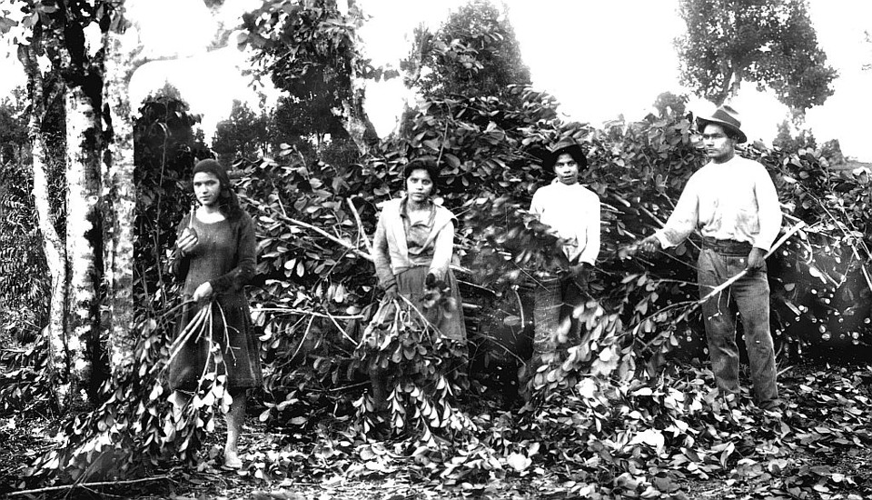
A identidade cultural de Toledo foi construída ao longo do tempo pela contribuição de diferentes comunidades e tradições. A influência de famílias descendentes de imigrantes europeus, entre outros grupos, pode ser percebida nos costumes, na gastronomia e nas manifestações populares. Eventos como a Festa do Porco no Rolete representam parte dessa trajetória, enquanto espaços como o Teatro Municipal e os museus contribuem para preservar e divulgar as diferentes expressões culturais presentes no município.
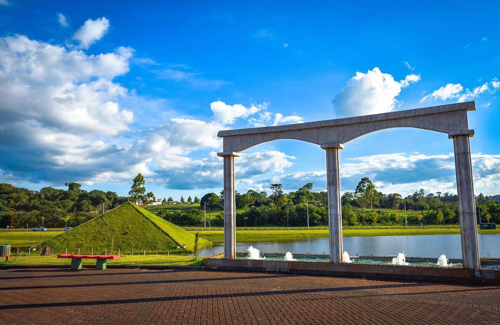
O crescimento de Toledo modificou profundamente sua paisagem e a relação da população com o espaço urbano. Áreas que antes eram marcadas pela vegetação e pelas atividades rurais deram lugar a bairros, espaços públicos e estruturas de lazer. O Parque Ecológico Diva Paim Barth, por exemplo, tornou-se um importante espaço de convivência e contato com a natureza. Esses espaços também fazem parte da memória coletiva e ajudam a compreender as transformações vividas pelo município ao longo de sua história.
Galeria
Imagens da cidade de Toledo
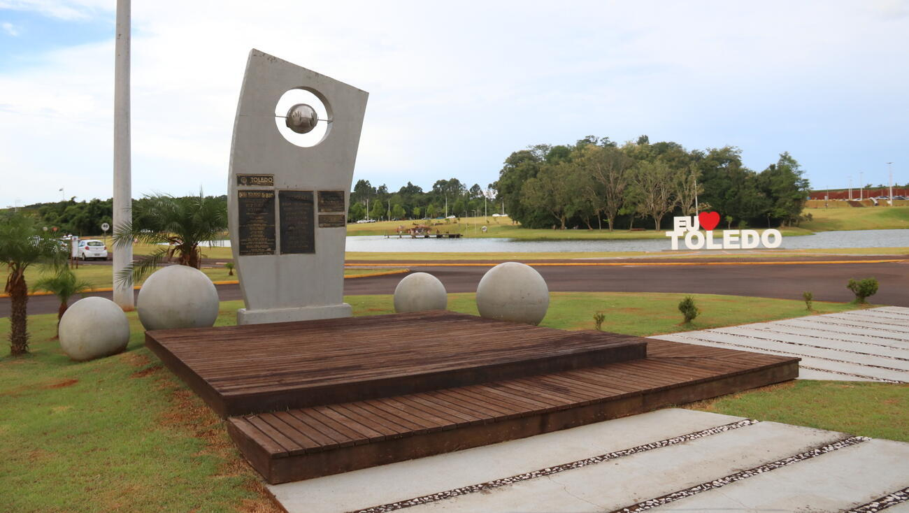
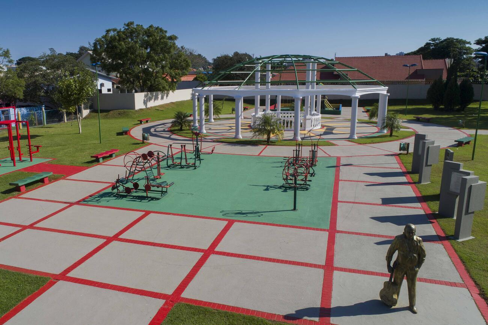
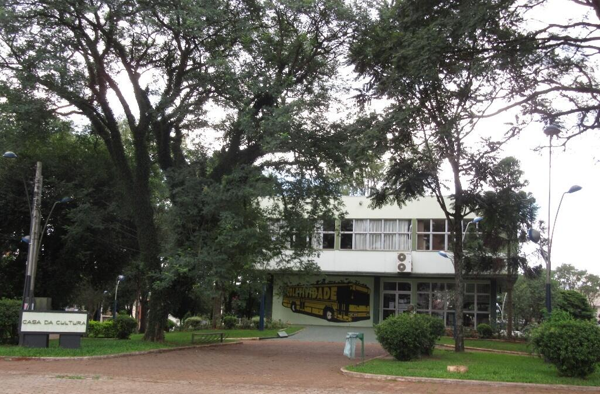
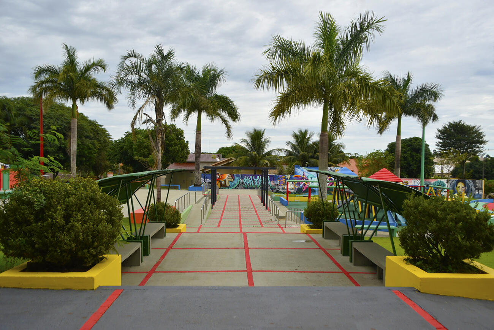
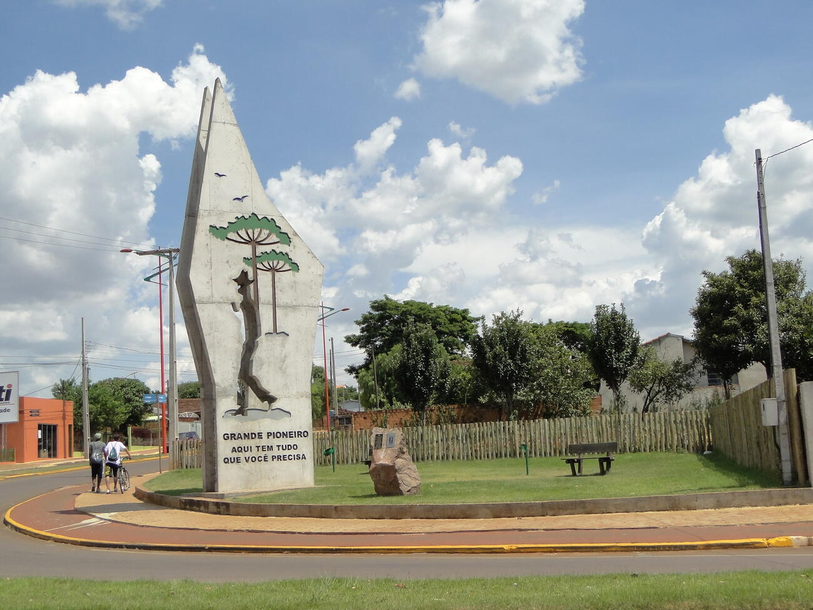
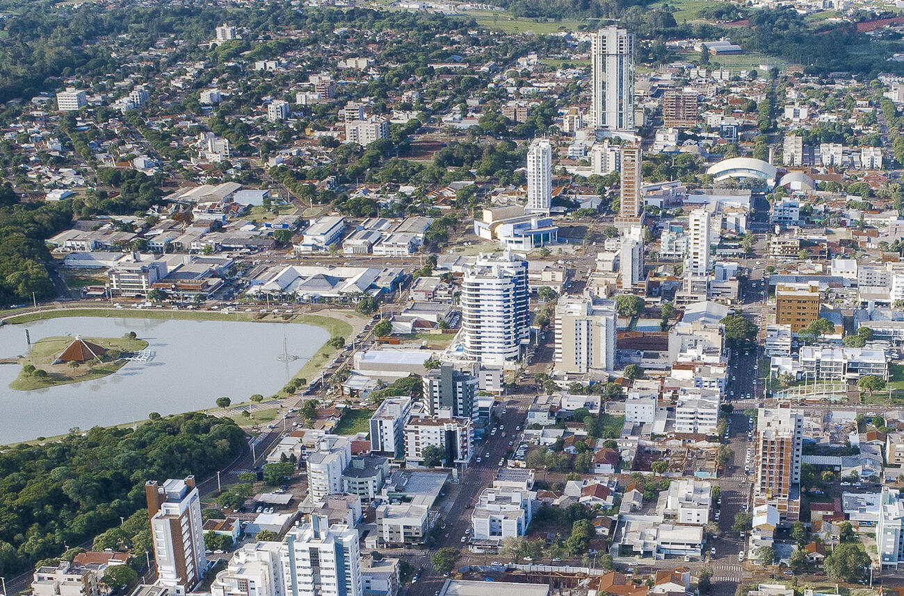
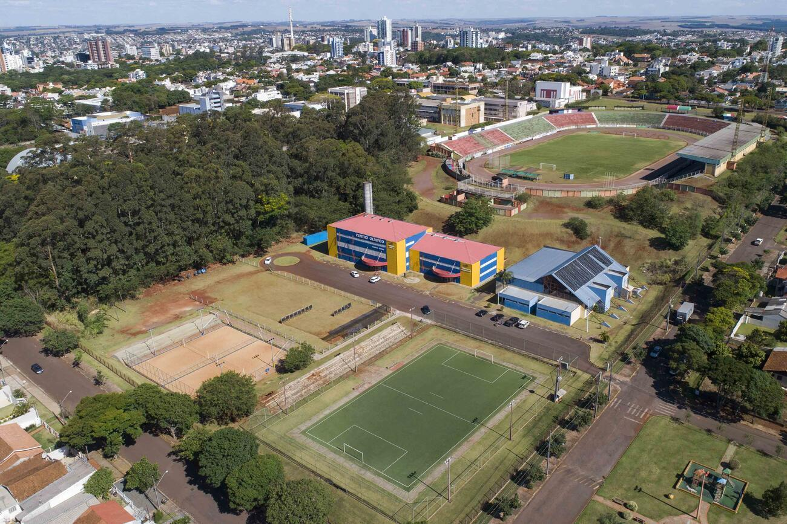
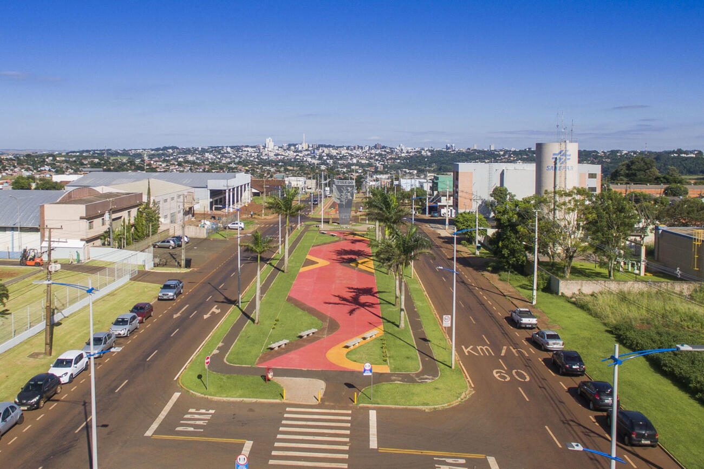